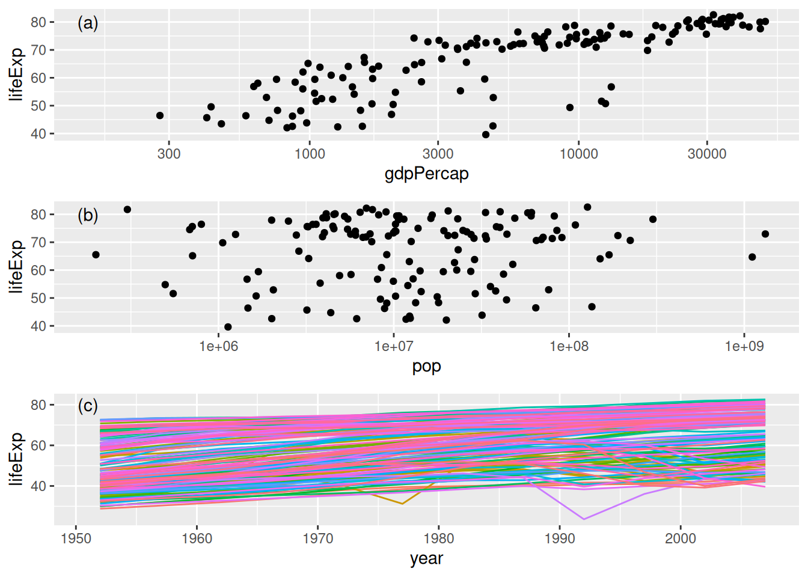

{kind=link}
plot(x = , y = , ...)Graphics with ggplot
Overview
Most users use either base R graphics or ggplot (in the ggplot2 package). We’ll focus on ggplot after a brief intro of base R graphics.
And here’s some motivation - we can produce a plot like this with a few lines of code.
(Compare to the famous gapminder plot.)
In 2018 or so, producing my version of the plot took me some time experimenting and Googling. I suspect one could do it with a ChatBot quite quickly now. But I’d be curious what errors there would be and how much debugging and knowledge of ggplot would be needed. See Problem 6 of the Breakout.
Base graphics
The general call for base plot looks something like this:
Additional parameters can be passed in to customize the plot:
type: scatterplot? lines? etcmain: a titlexlab,ylab: x-axis and y-axis labelscol: color, either a string with the color name or a vector of color names for each point
More layers can be added to the plot with additional calls to lines, points, text, etc.
gapChina <- gapminder %>% filter(country == "China")
plot(gapChina$year, gapChina$gdpPercap)plot(gapChina$year, gapChina$gdpPercap, type = "l",
main = "China GDP over time",
xlab = "Year", ylab = "GDP per capita") # with updated parameters
points(gapChina$year, gapChina$gdpPercap, pch = 16)
points(x = 1977, y = gapChina$gdpPercap[gapChina$year == 1977],
col = "red", pch = 16)Other plot types in base graphics
These are a variety of other types of plots you can make in base graphics.
boxplot(lifeExp ~ year, data = gapminder)hist(gapminder$lifeExp[gapminder$year == 2007])plot(density(gapminder$lifeExp[gapminder$year == 2007]))barplot(gapChina$pop, width = 4, names.arg = gapChina$year,
main = "China population")Object-oriented plots
- Base graphics often recognizes the object type and will implement specific plot methods (see that
plotis an S3 generic). - ggplot generally doesn’t exhibit this sort of behavior.
Here are two examples:
gap_lm <- lm(lifeExp ~ log(gdpPercap) + year, data = gapminder)
# Calls plotting method for class of the dataset ("data.frame")
plot(gapminder[,c('pop','lifeExp','gdpPercap')])# Calls plotting method for class of gap_lm object ("lm"), print first two plots only
plot(gap_lm, which=1:2)Pros/cons of base graphics vs. ggplot
Base graphics is:
good for exploratory data analysis and sanity checks
inconsistent in syntax across functions: some take x,y while others take formulas
default plotting parameters are ugly, and it can be difficult to customize
that said, one can do essentially anything in base graphics with some work
ggplot2 is:
generally more elegant
more syntactically logical (and therefore simpler, once you learn it)
better at grouping
easy to interface with maps
We’ll focus on ggplot2 as it is very powerful, very widely-used and allows one to produce very nice-looking graphics without a lot of coding.
ggplot
Basic usage: ggplot2
The general call for ggplot2 graphics looks something like this:
# NOT run
ggplot(data = , mapping = aes(x = ,y = , [options])) + geom_xxxx() + ... + ... + ...Note that ggplot2 graphs in layers in a continuing call (hence the endless +…+…+…), which makes additional layers in the plot.
... + geom_xxxx(mapping = aes(x = , y = ,[options]), [options]) + ... + ... + ...You can see the layering effect by comparing the same graph with different colors for each layer
p <- ggplot(data = gapChina, aes(x = year, y = lifeExp)) +
geom_point(color = "red")
pp + geom_point(aes(x = year, y = lifeExp), color = "gray") + ylab("life expectancy") +
theme_minimal()Grammar of graphics
ggplot2 syntax is very different from base R graphics. It’s built on the grammar of graphics. The basic idea is that the visualization of all data requires four items:
One or more statistics conveying information about the data (identities, means, medians, etc.)
A coordinate system that characterizes the intersections of statistics (at most two for ggplot, three for
lattice)Geometries that differentiate between off-coordinate variation in kind
Scales that differentiate between off-coordinate variation in degree
ggplot2 allows the user to manipulate all four of these items through the stat_*, coord_*, geom_*, and scale_* functions.
All of these are important to becoming a ggplot expert, but today we are going to focus on the most important to basic users and their data layers: ggplot’s geometries.
Some Examples
## Scatterplot
ggplot(gapChina, aes(x = year, y = lifeExp)) + geom_point() +
ggtitle("China's life expectancy")## Line (time series) plot
ggplot(gapChina, aes(x = year, y = lifeExp)) + geom_line() +
ggtitle("China's life expectancy")
## Boxplot
ggplot(gapminder, aes(x = factor(year), y = lifeExp)) + geom_boxplot() +
ggtitle("World's life expectancy")## Histogram
gapminder2007 <- gapminder |> filter(year == 2007)
ggplot(gapminder2007, aes(x = lifeExp)) + geom_histogram(binwidth = 5) +
ggtitle("World's life expectancy")
ggplot and tidy data
ggplot2 plays nicely with dplyr and pipes. If you want to manipulate your data specifically for one plot but not save the new dataset, you can call your dplyr chain and pipe it directly into a ggplot call.
# This combines the subsetting and plotting into one step
gapminder |> filter(year == 2007) |>
ggplot(aes(x = lifeExp)) + geom_histogram(binwidth = 5) +
ggtitle("World's life expectancy")
Base graphics and ggplot have a big difference: ggplot requires your data to be in tidy format. For base graphics, it can actually be helpful not to have your data in tidy format in some cases.
Features of ggplot
- Allows you to add features in “layers”
- Automatically adjusts spacing and sizing as you add more layers
- Requires data to be in tidy format
- Syntax is different from base R – there is a learning curve
- Plots are actually objects. You can assign them to a variable and do things with it (more on this later)
An overview of syntax for various ggplot2 geoms
We’ve already seen these initial ones.
These are provided for reference – we won’t spend time on each one.
X-Y scatter plots:
geom_point()
ggplot(gapChina, aes(x = year, y = lifeExp)) + geom_point() +
ggtitle("China's life expectancy")
X-Y line plots:
geom_line() or geom_path()
ggplot(gapChina, aes(x = year, y = lifeExp)) + geom_line() +
ggtitle("China's life expectancy")
Histograms:
geom_histogram(), geom_col(), or geom_bar()
gapminder2007 <- gapminder |> filter(year == 2007)
ggplot(gapminder2007, aes(x = lifeExp)) + geom_histogram(binwidth = 5) +
ggtitle("World's life expectancy")
Densities:
geom_density(), geom_density2d()
ggplot(gapminder2007, aes(x = lifeExp)) + geom_density() +
ggtitle("World's life expectancy")
Boxplots:
geom_boxplot()
# Notice that here, you must explicitly convert numeric years to factors
ggplot(data = gapminder, aes(x = factor(year), y = lifeExp)) +
geom_boxplot()
Contour plots:
geom_contour()
data(volcano) # Load volcano contour data
volcano[1:10, 1:10] # Examine volcano dataset (first 10 rows and columns) [,1] [,2] [,3] [,4] [,5] [,6] [,7] [,8] [,9] [,10]
[1,] 100 100 101 101 101 101 101 100 100 100
[2,] 101 101 102 102 102 102 102 101 101 101
[3,] 102 102 103 103 103 103 103 102 102 102
[4,] 103 103 104 104 104 104 104 103 103 103
[5,] 104 104 105 105 105 105 105 104 104 103
[6,] 105 105 105 106 106 106 106 105 105 104
[7,] 105 106 106 107 107 107 107 106 106 105
[8,] 106 107 107 108 108 108 108 107 107 106
[9,] 107 108 108 109 109 109 109 108 108 107
[10,] 108 109 109 110 110 110 110 109 109 108volcano3d <- melt(volcano) # Use reshape2 package to melt the data into tidy form
head(volcano3d) # Examine volcano3d dataset (head) Var1 Var2 value
1 1 1 100
2 2 1 101
3 3 1 102
4 4 1 103
5 5 1 104
6 6 1 105names(volcano3d) <- c("xvar", "yvar", "zvar") # Rename volcano3d columns
ggplot(data = volcano3d, aes(x = xvar, y = yvar, z = zvar)) +
geom_contour()
Tile/Image/Level plots, heatmaps:
geom_tile(), geom_rect(), geom_raster()
ggplot(data = volcano3d, aes(x = xvar, y = yvar, z = zvar)) +
geom_tile(aes(fill = zvar)) “Trellis” plots
Trellis plots allow you to stratify by a variable, with one panel per categorical value. One uses either facet_grid() or facet_wrap():
ggplot(data = gapminder, aes(x = lifeExp)) + geom_histogram(binwidth = 5) +
facet_wrap(~year)
This can be quite powerful. It gives you the ability to take account of an additional variable.
Anatomy of aes()
# NOT run
ggplot(data = , mapping = aes(x = , y = , color = , linetype = , shape = , size = ))These four aesthetic parameters (color, linetype, shape, size) can be used to show variation in kind (categories) and variation in degree (numeric).
Parameters passed into aes should be variables in your dataset.
Parameters passed to geom_xxx outside of aes should not be related to your dataset – they apply to the whole figure.
ggplot(data = gapminder, aes(x = year, y = lifeExp)) +
geom_line(aes(color = country), show.legend = FALSE)Note what happens when we specify the color parameter outside of the aesthetic operator. ggplot views these specifications as invalid graphical parameters.
ggplot(data = gapminder, aes(x = year, y = lifeExp)) +
geom_line(color = country)Error: object 'country' not foundggplot(data = gapminder, aes(x = year, y = lifeExp)) +
geom_line(color = "country")Error in `geom_line()`:
! Problem while converting geom to grob.
ℹ Error occurred in the 1st layer.
Caused by error:
! Unknown colour name: country## This 'works' syntactically but not substantively.
ggplot(data = gapminder, aes(x = year, y = lifeExp)) +
geom_line(color = "red")Note: Aesthetics automatically show up in your legend. Parameters (those not mapped to a variable in your data frame) do not!
Using aesthetics to highlight features
Differences in kind
## color as the aesthetic to differentiate by continent
ggplot(data = gapminder2007, aes(x = gdpPercap, y = lifeExp)) +
geom_point(aes(color = continent)) + scale_x_log10()
## point shape as the aesthetic to differentiate by continent
ggplot(data = gapminder2007, aes(x = gdpPercap, y = lifeExp)) +
geom_point(aes(shape = continent)) + scale_x_log10()
## line type as the aesthetic to differentiate by country
gapOceania <- gapminder |> filter(continent %in% 'Oceania')
ggplot(data = gapOceania, aes(x = year, y = lifeExp)) +
geom_line(aes(linetype = country)) + scale_x_log10()Differences in degree
## point size as the aesthetic to differentiate by population
ggplot(data = gapminder2007, aes(x = gdpPercap, y = lifeExp)) +
geom_point(aes(size = pop)) + scale_x_log10()
## color as the aesthetic to differentiate by population
ggplot(data = gapminder2007, aes(x = gdpPercap, y = lifeExp)) +
geom_point(aes(color = pop)) + scale_x_log10() +
scale_color_gradient(low = 'lightgray', high = 'black')Multiple non-coordinate aesthetics (differences in kind using color, degree using point size)
ggplot(data = gapminder2007, aes(x = gdpPercap, y = lifeExp)) +
geom_point(aes(size = pop, color = continent)) + scale_x_log10()
Question
How many variables have we represented? If we used a trellis plot we could represent yet another variable!
Using aesthetics: quick quiz
Question
Which of these ggplot2 calls will work (in the sense of not giving an error, not in the sense of being a useful plot)?
gapminder |> ggplot(aes(x = gdpPercap, y = lifeExp)) |> geom_point()gapminder |> ggplot(aes(x = gdpPercap, y = lifeExp))gapminder |> ggplot(aes(x = gdpPercap, y = lifeExp)) + geom_point()gapminder |> ggplot(aes(x = gdpPercap, y = lifeExp, shape = 'a')) + geom_point()gapminder |> ggplot(aes(x = gdpPercap, y = lifeExp)) + geom_point(aes(shape = country), show.legend = FALSE)gapminder |> ggplot(aes(x = gdpPercap, y = lifeExp)) + geom_point(shape = 'a', show.legend = FALSE)gapminder |> ggplot() + geom_point(aes(x = gdpPercap, y = lifeExp, shape = country), show.legend = FALSE)
Where do I put aes()? (optional)
As seen in the code snippets in the quick quiz, one can put aes() in the original ggplot() call or in latter geom_x() calls. What’s the difference?
- If one puts
aes()inggplot(), it affects all subsequent calls that are part of the same ggplot expression. - If one puts
aes()in ageom_x(), it affects only that particular component of the plotting.
So where you put it affects the “scope” of what it affects.
gapminder |> filter(continent == "Oceania") |>
ggplot(aes(x = year, y = gdpPercap, color = country)) +
geom_line() + geom_point()gapminder |> filter(continent == "Oceania") |>
ggplot(aes(x = year, y = gdpPercap)) +
geom_line(aes(color = country)) + geom_point()# Yikes, this doesn't work right:
gapminder |> filter(continent == "Oceania") |>
ggplot(aes(x = year, y = gdpPercap)) +
geom_point(aes(color = country)) + geom_line()Scaling Aesthetics
Aesthetics are handled by their very own scale functions which allow you to set the limits, breaks, transformations, and any palletes that might determine how you want your data plotted. ggplot includes a number of helpful default scale functions. For example:
scale_x_log10that can transform your data on the flyscale_color_viridisuses palettes from theviridispackage specifically designed to “make plots that are pretty, better represent your data, easier to read by those with colorblindness, and print well in grey scale.”
For example, our data might be better represented using a log10 transformation of per capita GDP:
ggplot(gapminder, aes(x = gdpPercap, y = lifeExp)) +
geom_point(aes(color = continent)) +
scale_x_log10()And perhaps we want colors that are a little different:
ggplot(gapminder, aes(x = gdpPercap, y = lifeExp)) +
geom_point(aes(color = continent)) +
scale_x_log10() +
scale_color_viridis_d()Or perhaps we want to set your palettes and breaks or labels manually:
ggplot(gapminder, aes(x = gdpPercap, y = lifeExp)) +
geom_point(aes(color = continent)) +
scale_x_log10(labels = scales::dollar) +
scale_color_manual("The continents",
values = c("red", "blue", "green", "yellow", "#800080")) # hex codes work!For more info about setting scales in ggplot and for more helper functions consider diving into the scales package which is the backend to much of the scales functionality in ggplot
Fine tuning your plot
ggplot handles many plot options as additional layers.
Labels
ggplot(data = gapminder2007, aes(x = gdpPercap, y = lifeExp)) + geom_point() +
xlab(label = "GDP per capita") +
ylab(label = "Life expectancy") +
ggtitle(label = "Gapminder") 
Or even more simply use the labs() function
ggplot(data = gapminder2007, aes(x = gdpPercap, y = lifeExp)) + geom_point() +
labs(x = "GDP per capita", y = "Life expectancy", title = "Gapminder")Axis and point scales
ggplot(data = gapminder, aes(x = gdpPercap, y = lifeExp)) +
geom_point()
ggplot(data = gapminder, aes(x = gdpPercap, y = lifeExp)) +
geom_point(size=3)
ggplot(data = gapminder, aes(x = gdpPercap, y = lifeExp)) +
geom_point(size=1) Colors
ggplot(data = gapminder, aes(x = gdpPercap, y = lifeExp)) +
geom_point(color = colors()[11])
ggplot(data = gapminder, aes(x = gdpPercap, y = lifeExp)) +
geom_point(color = "red") Point Styles and Widths
ggplot(data = gapminder, aes(x = gdpPercap, y = lifeExp)) +
geom_point(shape = 3)
ggplot(data = gapminder, aes(x = gdpPercap, y = lifeExp)) +
geom_point(shape = "w")
ggplot(data = gapminder, aes(x = gdpPercap, y = lifeExp)) +
geom_point(shape = "$", size=5) 
Line Styles and Widths
ggplot(data = gapChina, aes(x = year, y = lifeExp)) +
geom_line(linetype = 1)
ggplot(data = gapChina, aes(x = year, y = lifeExp)) +
geom_line(linetype = 2)
ggplot(data = gapChina, aes(x = year, y = lifeExp)) +
geom_line(linetype = 5, size = 2) Themes with ggplot2 (optional)
Elements of the plot not associated with geometries can be adjusted using ggplot themes.
There are some “complete” themes already included with the package:
theme_gray()(the default)theme_minimal()theme_bw()theme_light()theme_dark()theme_classic()
But in additional to these, you can tweak just about any element of your plot’s appearance using the theme() function.
For instance, perhaps you want to move the legend from the left to the bottom of your plot, this would be part of the plot theme. Note how you can add options to a complete theme already in the plot:
gapminder |>
filter(country %in% c("China", "Turkey", "Italy")) |>
ggplot(aes(x = year, y = lifeExp)) +
geom_line(aes(color = country)) +
theme_minimal() +
theme(legend.position = "bottom")Combining Multiple Plots
ggplot graphs can be combined using the grid.arrange() function in the gridExtra package. This takes advantage of each plot being an object.
library(gridExtra)
# Create 3 plots to combine in a table
plot1 <- ggplot(data = gapminder2007, aes(x = gdpPercap, y = lifeExp)) +
geom_point() + scale_x_log10() + annotate('text', 150, 80, label = '(a)')
plot2 <- ggplot(data = gapminder2007, aes(x = pop, y = lifeExp)) +
geom_point() + scale_x_log10() + annotate('text', 1.8e5, 80, label = '(b)')
plot3 <- ggplot(data = gapminder, aes(x = year, y = lifeExp)) +
geom_line(aes(color = country), show.legend = FALSE) +
annotate('text', 1951, 80, label = '(c)')
# Call grid.arrange
grid.arrange(plot1, plot2, plot3, nrow=3, ncol = 1)
patchwork: Combining Multiple ggplot plots (optional)
- The
patchworkpackage may be used to combine multiple ggplot plots using a small set of operators similar to the pipe. - This requires less syntax than using
gridExtraand allows complex arrangements to be built nearly effortlessly.
library(patchwork)
# use the patchwork operators
# stack plots horizontally
plot1 + plot2 + plot3# stack plots vertically
plot1 / plot2 / plot3# side-by-side plots with third plot below
(plot1 | plot2) / plot3# side-by-side plots with a space in between, and a third plot below
(plot1 | plot_spacer() | plot2) / plot3# stack plots vertically and alter with a single "gg_theme"
(plot1 / plot2 / plot3) & theme_bw()
ggplot extensions
patchwork is an example of a ggplot2 extension package of which there are many! One of the benefits to learning and using ggplot is that there is a huge community of developers that build separate graphics packages that generally use the same syntax to extend the ggplot2 functionality into things like animation and 3D plotting! Check them out here.
Exporting
There are two basic image formats: raster and vector.
Raster/Bitmap (.png, .jpeg)
Every pixel of a plot contains its own separate coding:
- sensible for gridded/raster output
- bad if you want to resize the image
- file size depends on pixel resolution
jpeg(filename = "example.jpg", width = , height =)
plot(x,y)
dev.off()Vector (.pdf, .ps)
Every element of a plot is encoded as a representation of its shape
- great for resizing
- image files with many elements can be very large.
pdf(file = "example.pdf", width = , height =)
plot(x,y)
dev.off()Exporting with ggplot
# Assume we saved our plot as an object called `plot1`.
ggsave(filename = "example.pdf", plot = plot1, scale = , width = , height = )Breakout
These questions ask you to work with the gapminder dataset.
Basics
Plot a histogram of life expectancy.
Plot the gdp per capita against population. Put the x-axis on the log scale.
Clean up your scatterplot with a title and axis labels. Output it as a PDF and see if you’d be comfortable with including it in a report/paper.
Using the ideas
Create a trellis plot of life expectancy by gdpPercap scatterplots, one subplot per continent. Use a 2x3 layout of panels in the plot. Now have the size of the points vary with population. Use
coord_cartesian()(orscale_x_continuous() to set the x-axis limits to be in the range from 100 to 50000.Make a boxplot of life expectancy conditional on binned values of gdp per capita.
Advanced
Try to create a facsimile of the famous Gapminder plot without looking at my code by using a ChatBot, providing it with information about the gapminder dataframe. For simplicity just try to create a static image (ignoring the ‘play’ button at bottom) for a single year such as 2007.
Alternatively (to #6), using the data for 2007, but without using a ChatBot, recreate as much as you can of the famous Gapminder plot. For simplicity just try to create a static image (ignoring the ‘play’ button at bottom) for a single year such as 2007.